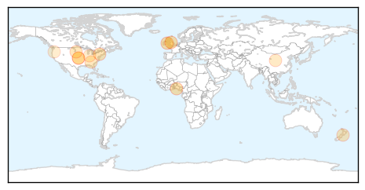
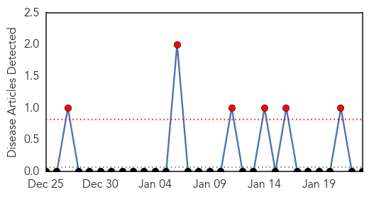

Influenza
30-Day Web Trend
1 alerts, 0 warnings

30-Day Twitter Trend
0 alerts, 0 warnings

Article Locations
Article Confidences

Top Articles:
- 0.997
- Doctors urged to prescribe antiviral drugs for flu patients earlier
- 0.993
- Four people dead from the flu this season · TheJournal.ie
- 0.986
- Flu in B.C. has 'passed the epidemic peak'
- 0.986
- Flu in B.C. has 'passed the epidemic peak': Health officials
- 0.947
- Building a better flu vaccine than this year’s debacle
- 0.936
- Seven Nigerian States Report Bird Flu Outbreaks
- 0.874
- NYC's New Flu Mandate
- 0.790
- Flu cases still on the rise in South Dakota
- 0.766
- Could flu vaccination protect your sense of smell?
- 0.764
- Today's stories from newspapers in Orangeville
- 0.685
- SFH on seasonal influenza and medical incidents
- 0.631
- Flu activity drops in Marion County; Flu deaths in Indiana reach
- 0.587
- Health Department Announces Clinic Schedule for Week of Jan. 26
- 0.580
- Poultry Industry Worried by Bird Flu Outbreak
Top Tweets:
-
No tweets found for Jan 23, 2015
Hemmorhagic Fever
30-Day Web Trend
6 alerts, 0 warnings

30-Day Twitter Trend
0 alerts, 0 warnings

Article Locations

Article Confidences

Top Articles:
-
No articles found for Jan 23, 2015
Top Tweets:
-
No tweets found for Jan 23, 2015